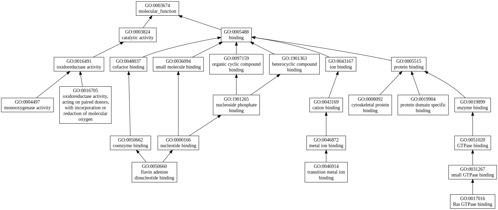
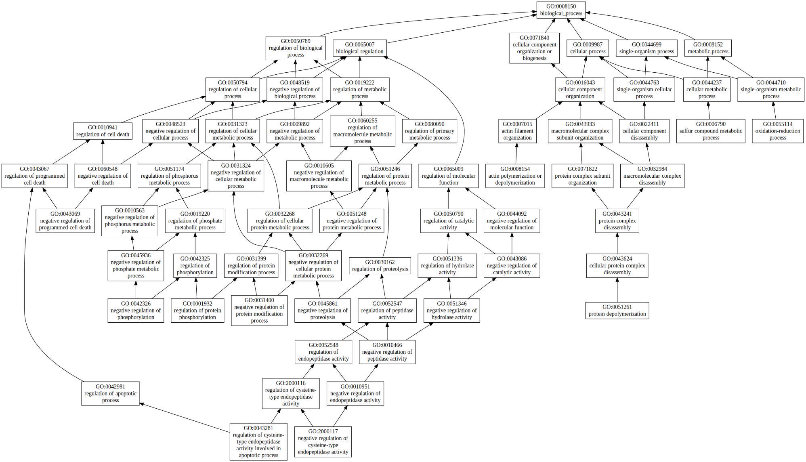
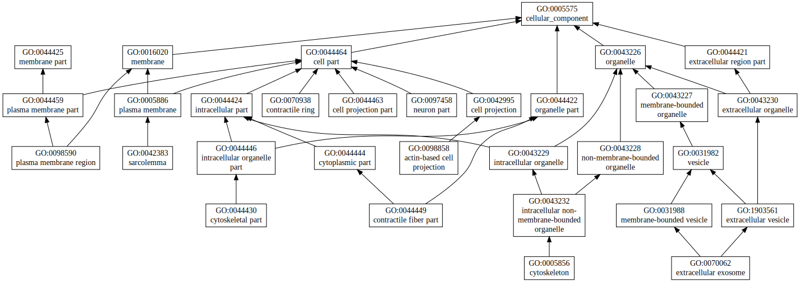

|

|
| GO term | CscoreGO | Name |
| GO:0050660 | 0.03 | flavin adenine dinucleotide binding |
| GO:0046914 | 0.03 | transition metal ion binding |
| GO:0016705 | 0.03 | oxidoreductase activity, acting on paired donors, with incorporation or reduction of molecular oxygen |
| GO:0008092 | 0.03 | cytoskeletal protein binding |
| GO:0004497 | 0.03 | monooxygenase activity |
| GO:0019904 | 0.02 | protein domain specific binding |
| GO:0017016 | 0.02 | Ras GTPase binding |
| Download full result of the above consensus prediction. |
| Click the graph to show a high resolution version. |
| (a) | CscoreGO is the confidence score of predicted GO terms. CscoreGO values range in between [0-1]; where a higher value indicates a better confidence in predicting the function using the template. |
| (b) | The graph shows the predicted terms within the Gene Ontology hierachy for Molecular Function. Confidently predicted terms are color coded by CscoreGO: |
| | [0.13,0.5) | [0.5,0.6) | [0.6,0.7) | [0.7,0.8) | [0.8,0.9) | [0.9,1.0] |
|
|
|

|
| GO term | CscoreGO | Name |
| GO:0055114 | 0.03 | oxidation-reduction process |
| GO:0051261 | 0.03 | protein depolymerization |
| GO:0008154 | 0.03 | actin polymerization or depolymerization |
| GO:0006790 | 0.03 | sulfur compound metabolic process |
| GO:2000117 | 0.02 | negative regulation of cysteine-type endopeptidase activity |
| GO:0043281 | 0.02 | regulation of cysteine-type endopeptidase activity involved in apoptotic process |
| GO:0043069 | 0.02 | negative regulation of programmed cell death |
| GO:0042326 | 0.02 | negative regulation of phosphorylation |
| GO:0031400 | 0.02 | negative regulation of protein modification process |
| GO:0001932 | 0.02 | regulation of protein phosphorylation |
| Download full result of the above consensus prediction. |
| Click the graph to show a high resolution version. |
| (a) | CscoreGO is the confidence score of predicted GO terms. CscoreGO values range in between [0-1]; where a higher value indicates a better confidence in predicting the function using the template. |
| (b) | The graph shows the predicted terms within the Gene Ontology hierachy for Biological Process. Confidently predicted terms are color coded by CscoreGO: |
| | [0.08,0.5) | [0.5,0.6) | [0.6,0.7) | [0.7,0.8) | [0.8,0.9) | [0.9,1.0] |
|
|
|

|
| Download full result of the above consensus prediction. |
| Click the graph to show a high resolution version. |
| (a) | CscoreGO is the confidence score of predicted GO terms. CscoreGO values range in between [0-1]; where a higher value indicates a better confidence in predicting the function using the template. |
| (b) | The graph shows the predicted terms within the Gene Ontology hierachy for Cellular Component. Confidently predicted terms are color coded by CscoreGO: |
| | [0.14,0.5) | [0.5,0.6) | [0.6,0.7) | [0.7,0.8) | [0.8,0.9) | [0.9,1.0] |
|
|
|